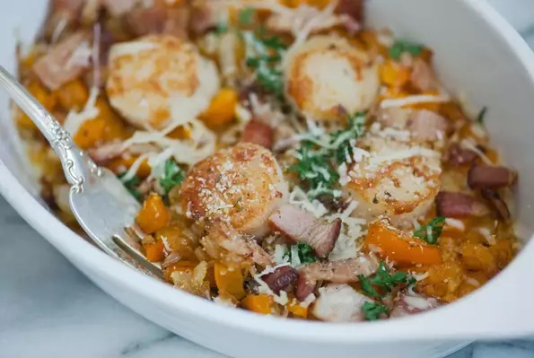

Scallops Casino
Description
A delectable combination of scallops, bacon, peppers, and a breadcrumb-Parmesan mixture sure to please. This is a luxurious appetizer served up with a crusty bread and roasted garlic.
Ingredients
- 1/2 cup plain bread crumbs
- 1 tabelspoon grated Parmesan cheese
- 1 tabelspoon olive oil
- 2 teaspoons chopped fresh parsley
- 2 slices lean bacon
- 1/2 pound sea scallops
- 1 tabelspoon butter
- 1/4 green bell pepper
- 1 tabelspoon minced onion
- 1 tabelspoon chopped roasted bell peppers
- 1 large clove garlic
- 1/3 cup dry white wine
- 2 teaspoons chicken broth
- Salt and freshly ground black pepper
- 1/2 lemon
Steps
- Preheat oven to 450 degrees F (230 degrees C).
- Combine bread crumbs, Parmesan cheese, olive oil, and parsley in a bowl.
- Cook bacon in a skillet over medium heat until golden but not crisp, 5 to 7 minutes. Transfer bacon to a paper towel-lined plate. Drain bacon fat from skillet until there is about 1 tablespoon fat left in the skillet. Add scallops and cook until golden brown, 1 1/2 to 2 minutes per side. Remove scallops from skillet.
- Wipe fat from skillet and add butter; cook and stir green bell pepper, onion, roasted red peppers, and garlic until fragrant and tender, 2 to 3 minutes. Add white wine; cook and stir for 1 minute. Add chicken broth and simmer for 1 minute; season with salt and pepper.
- Mix bacon and scallops into bell pepper mixture and transfer to a baking dish; top with bread crumb mixture.
- Bake in the preheated oven for 5 to 6 minutes. Turn on oven's broiler and broil until bread crumb mixture is lightly browned, 1 to 2 minutes.